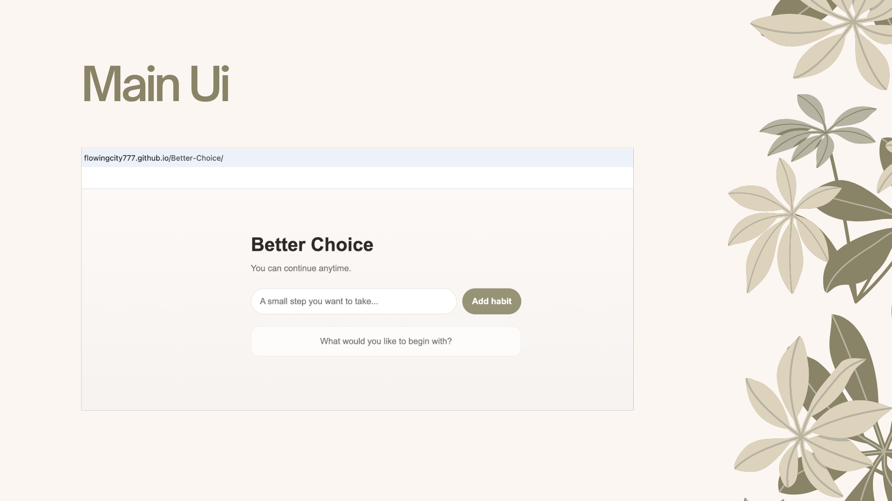
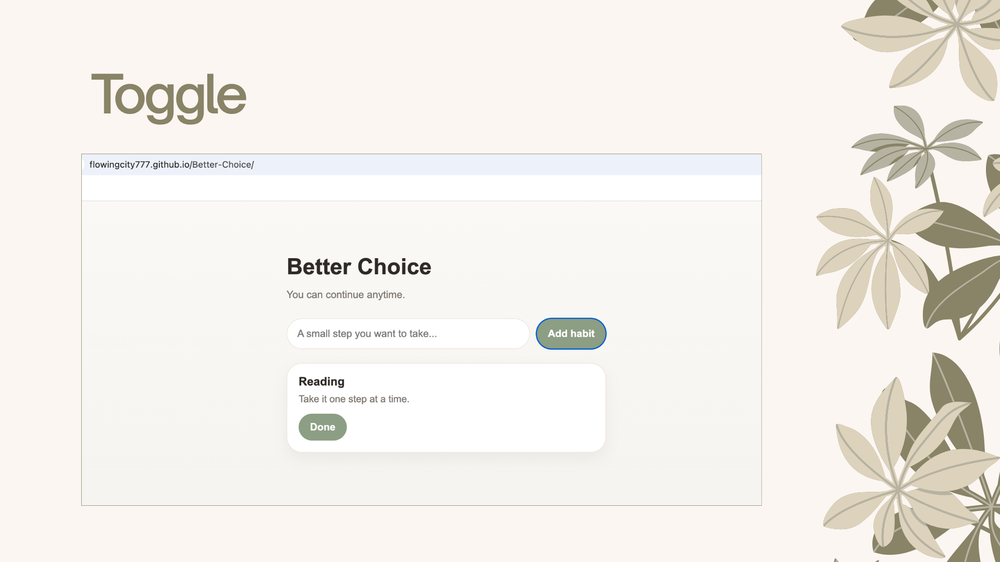
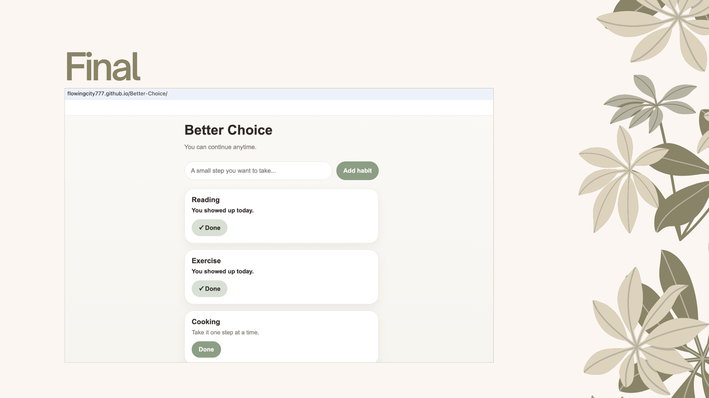

A calm, non-judgmental habit companion
Better Choice is a habit companion designed to support consistency without pressure, streaks, or guilt.
This project explores how digital products can encourage positive behavior while respecting the user’s pace and emotional well-being.

Many habit-tracking apps rely on streaks, reminders, and reward systems to drive engagement. While effective in the short term, these patterns can create pressure, guilt, and discouragement—especially when users miss a day. Instead of supporting long-term consistency, these systems can lead users to abandon habits altogether.
Instead of motivating through urgency or rewards, the product supports users through:
The design focuses on creating a calm, non-judgmental experience. When users feel judged or penalized, they are more likely to disengage. A more sustainable approach is to remove pressure and allow users to return at their own pace.
Streaks were intentionally removed to avoid creating pressure or fear of failure. The design prioritizes continuity over perfection.
Instead of points or achievements, the interface provides quiet acknowledgment: “You showed up today.” This reinforces effort without creating dependency on rewards.
The empty state invites users to begin at their own pace: “What would you like to begin with?” This creates a sense of openness rather than instruction.
Marking a habit as done transforms the interface from action to reflection. The interaction is intentionally subtle, reinforcing presence rather than completion.

The final product is a minimal habit companion where users can:

This project challenged me to rethink common engagement patterns in digital products. Instead of optimizing for retention or activity, I focused on designing for emotional sustainability. It reinforced my interest in creating experiences that support users without relying on manipulation or pressure.